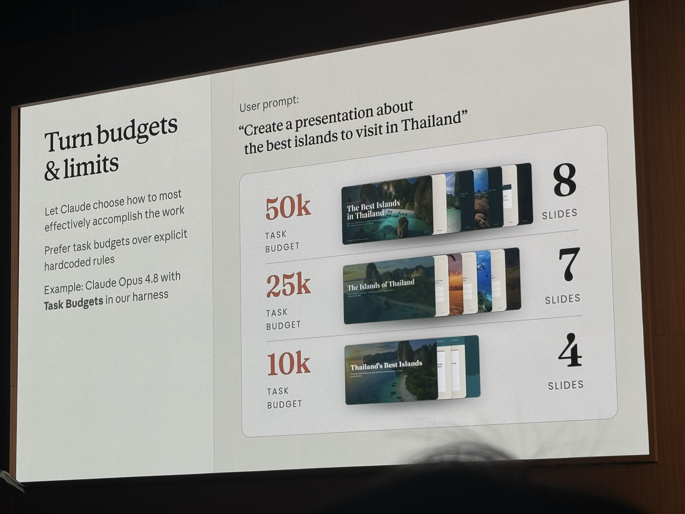
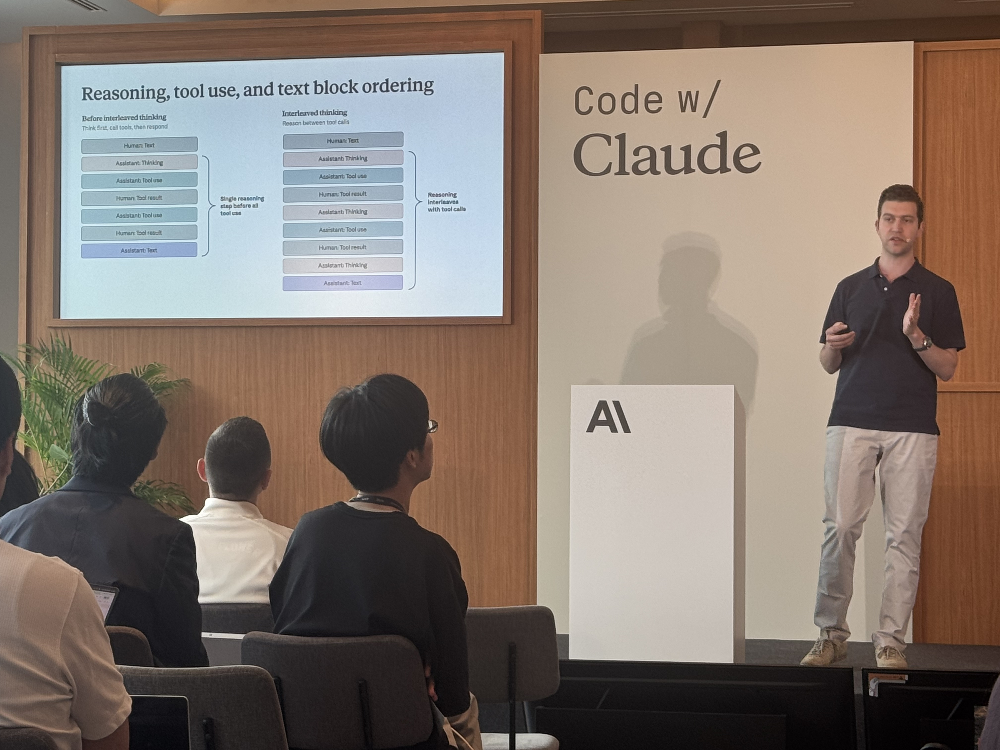
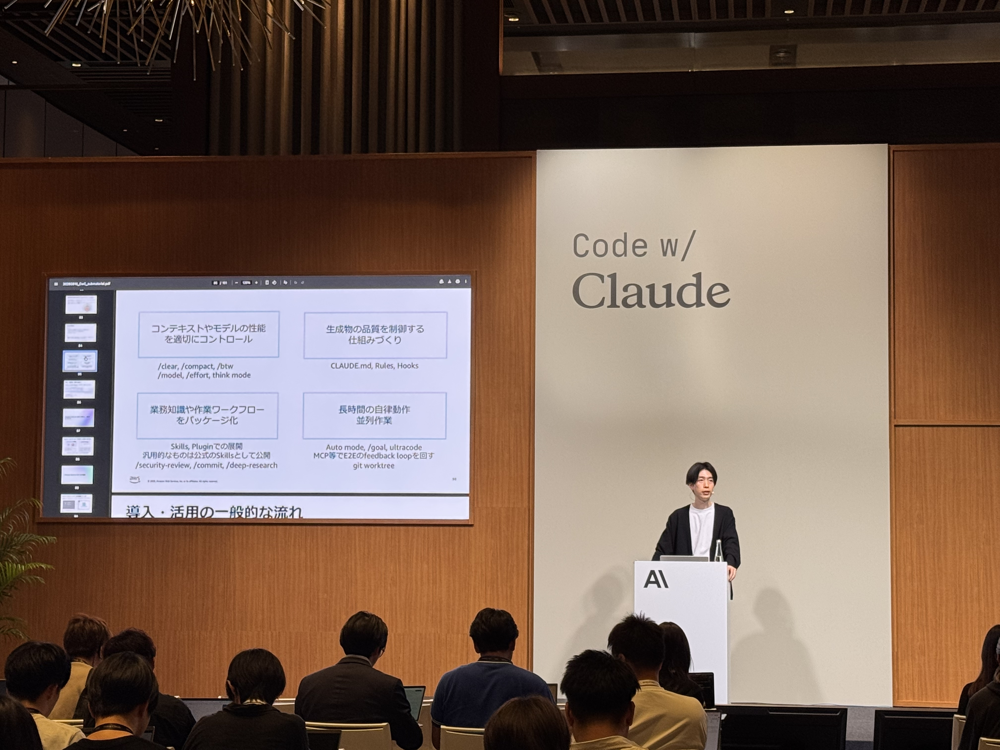

Code w/ Claude
Tokyo recap
Sessions, highlights, and takeaways for the AWS team
Stop managing infrastructure.
Start managing agent quality.
The sessions
Every agent is built from four primitives

Memory, Vaults,
and multi-agent

Verification,
multi-tasking, background

Turn budgets
into quality

Reasoning
between tool calls


Builders shipping
with Claude today

Kazuya Iwami
presenting for AWS
AWS SA Kazuya Iwami presented a practical 2×2 adoption framework for Claude Code — covering the four capabilities enterprise teams need to progress from basic usage to long-running autonomous workflows

A packed room of builders who are
already shipping, not just evaluating
Key themes
Managed infrastructure is here
Claude Managed Agents handles hosting, scaling, sessions, Memory, and Vaults — available on the Claude Platform on AWS. Developers focus on agent design, not DevOps
Cost and quality are now tunable
Task Budgets let teams dial quality vs. cost without rewriting prompts — set a token budget, let Opus 4.8 decide how to use it. Same workflow, different fidelity
Trust is built through verification
Verification loops, interleaved reasoning, and structured event output all serve one goal: earning enough confidence in agent behavior to remove the human from the loop
Japan is already building
Packed room, deep technical questions, AWS SA on stage. Japanese developers — Rakuten included — are past evaluation and scheduling production agent runs